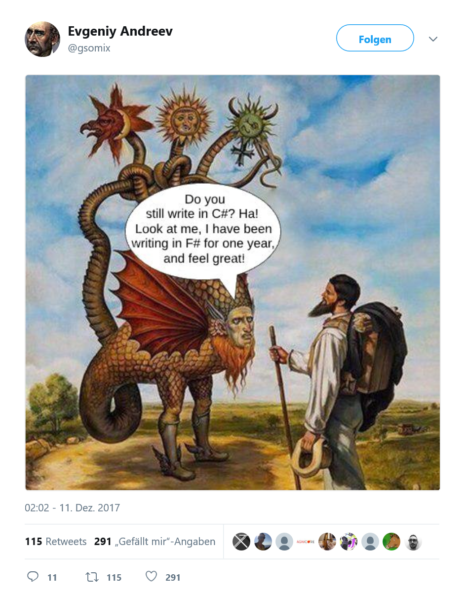
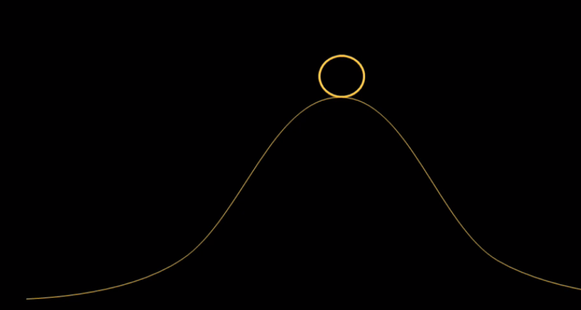
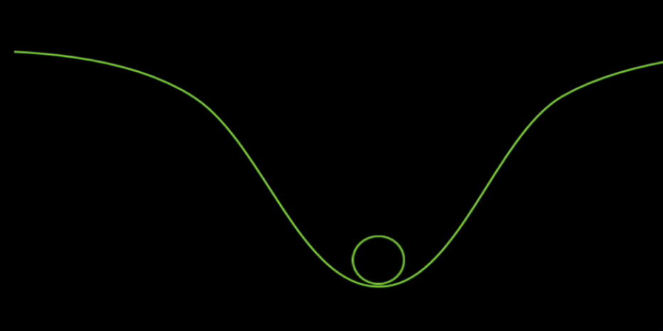
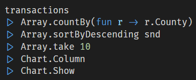
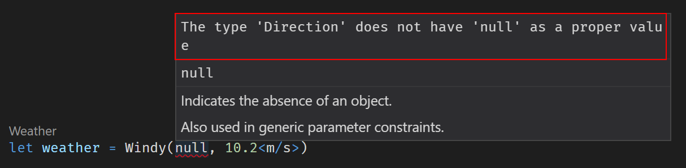
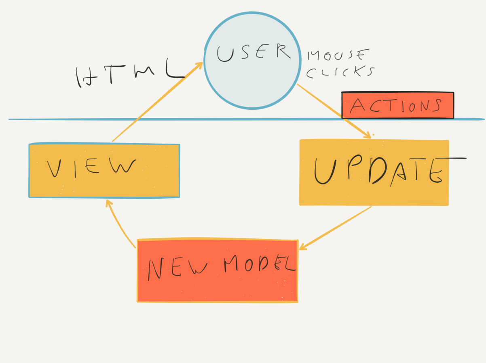

val x : int
Full name: index.x
Full name: index.x
Multiple items
val int : value:'T -> int (requires member op_Explicit)
Full name: Microsoft.FSharp.Core.Operators.int
--------------------
type int = int32
Full name: Microsoft.FSharp.Core.int
--------------------
type int<'Measure> = int
Full name: Microsoft.FSharp.Core.int<_>
val int : value:'T -> int (requires member op_Explicit)
Full name: Microsoft.FSharp.Core.Operators.int
--------------------
type int = int32
Full name: Microsoft.FSharp.Core.int
--------------------
type int<'Measure> = int
Full name: Microsoft.FSharp.Core.int<_>
val inferredX : int
Full name: index.inferredX
Full name: index.inferredX
val helloWorld : name:string -> string
Full name: index.helloWorld
Full name: index.helloWorld
val name : string
val sprintf : format:Printf.StringFormat<'T> -> 'T
Full name: Microsoft.FSharp.Core.ExtraTopLevelOperators.sprintf
Full name: Microsoft.FSharp.Core.ExtraTopLevelOperators.sprintf
val text : string
Full name: index.text
Full name: index.text
val person : string * int
Full name: index.person
Full name: index.person
val personShortHand : string * int
Full name: index.personShortHand
Full name: index.personShortHand
val name : string
Full name: index.name
Full name: index.name
val age : int
Full name: index.age
Full name: index.age
type Person =
{Name: string;
Age: int;}
Full name: index.Person
{Name: string;
Age: int;}
Full name: index.Person
Person.Name: string
Multiple items
val string : value:'T -> string
Full name: Microsoft.FSharp.Core.Operators.string
--------------------
type string = System.String
Full name: Microsoft.FSharp.Core.string
val string : value:'T -> string
Full name: Microsoft.FSharp.Core.Operators.string
--------------------
type string = System.String
Full name: Microsoft.FSharp.Core.string
Person.Age: int
val me : Person
Full name: index.me
Full name: index.me
val printfn : format:Printf.TextWriterFormat<'T> -> 'T
Full name: Microsoft.FSharp.Core.ExtraTopLevelOperators.printfn
Full name: Microsoft.FSharp.Core.ExtraTopLevelOperators.printfn
val a : int
Full name: index.a
Full name: index.a
val mutable y : int
Full name: index.y
Full name: index.y
val youngerme : Person
Full name: index.youngerme
Full name: index.youngerme
val set : elements:seq<'T> -> Set<'T> (requires comparison)
Full name: Microsoft.FSharp.Core.ExtraTopLevelOperators.set
Full name: Microsoft.FSharp.Core.ExtraTopLevelOperators.set
namespace Microsoft.FSharp
namespace Microsoft.FSharp.Data
namespace Microsoft.FSharp.Data.UnitSystems
namespace Microsoft.FSharp.Data.UnitSystems.SI
namespace Microsoft.FSharp.Data.UnitSystems.SI.UnitSymbols
type Direction =
| North
| South
| East
| West
Full name: index.Direction
| North
| South
| East
| West
Full name: index.Direction
union case Direction.North: Direction
union case Direction.South: Direction
union case Direction.East: Direction
union case Direction.West: Direction
type Weather =
| Cold of temperature: float<C>
| Sunny
| Wet
| Windy of Direction * windspeed: float<m/s>
Full name: index.Weather
| Cold of temperature: float<C>
| Sunny
| Wet
| Windy of Direction * windspeed: float<m/s>
Full name: index.Weather
union case Weather.Cold: temperature: float<C> -> Weather
Multiple items
val float : value:'T -> float (requires member op_Explicit)
Full name: Microsoft.FSharp.Core.Operators.float
--------------------
type float = System.Double
Full name: Microsoft.FSharp.Core.float
--------------------
type float<'Measure> = float
Full name: Microsoft.FSharp.Core.float<_>
val float : value:'T -> float (requires member op_Explicit)
Full name: Microsoft.FSharp.Core.Operators.float
--------------------
type float = System.Double
Full name: Microsoft.FSharp.Core.float
--------------------
type float<'Measure> = float
Full name: Microsoft.FSharp.Core.float<_>
[<Measure>]
type C = Data.UnitSystems.SI.UnitNames.coulomb
Full name: Microsoft.FSharp.Data.UnitSystems.SI.UnitSymbols.C
type C = Data.UnitSystems.SI.UnitNames.coulomb
Full name: Microsoft.FSharp.Data.UnitSystems.SI.UnitSymbols.C
union case Weather.Sunny: Weather
union case Weather.Wet: Weather
union case Weather.Windy: Direction * windspeed: float<m/s> -> Weather
[<Measure>]
type m = Data.UnitSystems.SI.UnitNames.metre
Full name: Microsoft.FSharp.Data.UnitSystems.SI.UnitSymbols.m
type m = Data.UnitSystems.SI.UnitNames.metre
Full name: Microsoft.FSharp.Data.UnitSystems.SI.UnitSymbols.m
[<Measure>]
type s = Data.UnitSystems.SI.UnitNames.second
Full name: Microsoft.FSharp.Data.UnitSystems.SI.UnitSymbols.s
type s = Data.UnitSystems.SI.UnitNames.second
Full name: Microsoft.FSharp.Data.UnitSystems.SI.UnitSymbols.s
val weather : Weather
Full name: index.weather
Full name: index.weather
val speed : float<m/s>
val temp : float<C>
active recognizer High: float<m/s> -> Choice<unit,unit,unit>
Full name: index.( |Low|Medium|High| )
Full name: index.( |Low|Medium|High| )
namespace System
namespace System.Net
val webPageSize : Async<int>
Full name: index.webPageSize
Full name: index.webPageSize
val async : AsyncBuilder
Full name: Microsoft.FSharp.Core.ExtraTopLevelOperators.async
Full name: Microsoft.FSharp.Core.ExtraTopLevelOperators.async
val wc : WebClient
Multiple items
type WebClient =
inherit Component
new : unit -> WebClient
member BaseAddress : string with get, set
member CachePolicy : RequestCachePolicy with get, set
member CancelAsync : unit -> unit
member Credentials : ICredentials with get, set
member DownloadData : address:string -> byte[] + 1 overload
member DownloadDataAsync : address:Uri -> unit + 1 overload
member DownloadFile : address:string * fileName:string -> unit + 1 overload
member DownloadFileAsync : address:Uri * fileName:string -> unit + 1 overload
member DownloadString : address:string -> string + 1 overload
...
Full name: System.Net.WebClient
--------------------
WebClient() : unit
type WebClient =
inherit Component
new : unit -> WebClient
member BaseAddress : string with get, set
member CachePolicy : RequestCachePolicy with get, set
member CancelAsync : unit -> unit
member Credentials : ICredentials with get, set
member DownloadData : address:string -> byte[] + 1 overload
member DownloadDataAsync : address:Uri -> unit + 1 overload
member DownloadFile : address:string * fileName:string -> unit + 1 overload
member DownloadFileAsync : address:Uri * fileName:string -> unit + 1 overload
member DownloadString : address:string -> string + 1 overload
...
Full name: System.Net.WebClient
--------------------
WebClient() : unit
val result : string
member WebClient.AsyncDownloadString : address:Uri -> Async<string>
Multiple items
type Uri =
new : uriString:string -> Uri + 5 overloads
member AbsolutePath : string
member AbsoluteUri : string
member Authority : string
member DnsSafeHost : string
member Equals : comparand:obj -> bool
member Fragment : string
member GetComponents : components:UriComponents * format:UriFormat -> string
member GetHashCode : unit -> int
member GetLeftPart : part:UriPartial -> string
...
Full name: System.Uri
--------------------
Uri(uriString: string) : unit
Uri(uriString: string, uriKind: UriKind) : unit
Uri(baseUri: Uri, relativeUri: string) : unit
Uri(baseUri: Uri, relativeUri: Uri) : unit
type Uri =
new : uriString:string -> Uri + 5 overloads
member AbsolutePath : string
member AbsoluteUri : string
member Authority : string
member DnsSafeHost : string
member Equals : comparand:obj -> bool
member Fragment : string
member GetComponents : components:UriComponents * format:UriFormat -> string
member GetHashCode : unit -> int
member GetLeftPart : part:UriPartial -> string
...
Full name: System.Uri
--------------------
Uri(uriString: string) : unit
Uri(uriString: string, uriKind: UriKind) : unit
Uri(baseUri: Uri, relativeUri: string) : unit
Uri(baseUri: Uri, relativeUri: Uri) : unit
property String.Length: int
val prettyPrintTime : unit -> unit
Full name: index.prettyPrintTime
Full name: index.prettyPrintTime
val time : DateTime
Multiple items
type DateTime =
struct
new : ticks:int64 -> DateTime + 10 overloads
member Add : value:TimeSpan -> DateTime
member AddDays : value:float -> DateTime
member AddHours : value:float -> DateTime
member AddMilliseconds : value:float -> DateTime
member AddMinutes : value:float -> DateTime
member AddMonths : months:int -> DateTime
member AddSeconds : value:float -> DateTime
member AddTicks : value:int64 -> DateTime
member AddYears : value:int -> DateTime
...
end
Full name: System.DateTime
--------------------
DateTime()
(+0 other overloads)
DateTime(ticks: int64) : unit
(+0 other overloads)
DateTime(ticks: int64, kind: DateTimeKind) : unit
(+0 other overloads)
DateTime(year: int, month: int, day: int) : unit
(+0 other overloads)
DateTime(year: int, month: int, day: int, calendar: Globalization.Calendar) : unit
(+0 other overloads)
DateTime(year: int, month: int, day: int, hour: int, minute: int, second: int) : unit
(+0 other overloads)
DateTime(year: int, month: int, day: int, hour: int, minute: int, second: int, kind: DateTimeKind) : unit
(+0 other overloads)
DateTime(year: int, month: int, day: int, hour: int, minute: int, second: int, calendar: Globalization.Calendar) : unit
(+0 other overloads)
DateTime(year: int, month: int, day: int, hour: int, minute: int, second: int, millisecond: int) : unit
(+0 other overloads)
DateTime(year: int, month: int, day: int, hour: int, minute: int, second: int, millisecond: int, kind: DateTimeKind) : unit
(+0 other overloads)
type DateTime =
struct
new : ticks:int64 -> DateTime + 10 overloads
member Add : value:TimeSpan -> DateTime
member AddDays : value:float -> DateTime
member AddHours : value:float -> DateTime
member AddMilliseconds : value:float -> DateTime
member AddMinutes : value:float -> DateTime
member AddMonths : months:int -> DateTime
member AddSeconds : value:float -> DateTime
member AddTicks : value:int64 -> DateTime
member AddYears : value:int -> DateTime
...
end
Full name: System.DateTime
--------------------
DateTime()
(+0 other overloads)
DateTime(ticks: int64) : unit
(+0 other overloads)
DateTime(ticks: int64, kind: DateTimeKind) : unit
(+0 other overloads)
DateTime(year: int, month: int, day: int) : unit
(+0 other overloads)
DateTime(year: int, month: int, day: int, calendar: Globalization.Calendar) : unit
(+0 other overloads)
DateTime(year: int, month: int, day: int, hour: int, minute: int, second: int) : unit
(+0 other overloads)
DateTime(year: int, month: int, day: int, hour: int, minute: int, second: int, kind: DateTimeKind) : unit
(+0 other overloads)
DateTime(year: int, month: int, day: int, hour: int, minute: int, second: int, calendar: Globalization.Calendar) : unit
(+0 other overloads)
DateTime(year: int, month: int, day: int, hour: int, minute: int, second: int, millisecond: int) : unit
(+0 other overloads)
DateTime(year: int, month: int, day: int, hour: int, minute: int, second: int, millisecond: int, kind: DateTimeKind) : unit
(+0 other overloads)
property DateTime.UtcNow: DateTime
property DateTime.Hour: int
property DateTime.Minute: int
type 'T list = List<'T>
Full name: Microsoft.FSharp.Collections.list<_>
Full name: Microsoft.FSharp.Collections.list<_>
Multiple items
module List
from Microsoft.FSharp.Collections
--------------------
type List<'T> =
| ( [] )
| ( :: ) of Head: 'T * Tail: 'T list
interface IEnumerable
interface IEnumerable<'T>
member GetSlice : startIndex:int option * endIndex:int option -> 'T list
member Head : 'T
member IsEmpty : bool
member Item : index:int -> 'T with get
member Length : int
member Tail : 'T list
static member Cons : head:'T * tail:'T list -> 'T list
static member Empty : 'T list
Full name: Microsoft.FSharp.Collections.List<_>
module List
from Microsoft.FSharp.Collections
--------------------
type List<'T> =
| ( [] )
| ( :: ) of Head: 'T * Tail: 'T list
interface IEnumerable
interface IEnumerable<'T>
member GetSlice : startIndex:int option * endIndex:int option -> 'T list
member Head : 'T
member IsEmpty : bool
member Item : index:int -> 'T with get
member Length : int
member Tail : 'T list
static member Cons : head:'T * tail:'T list -> 'T list
static member Empty : 'T list
Full name: Microsoft.FSharp.Collections.List<_>
val mapi : mapping:(int -> 'T -> 'U) -> list:'T list -> 'U list
Full name: Microsoft.FSharp.Collections.List.mapi
Full name: Microsoft.FSharp.Collections.List.mapi
val id : x:'T -> 'T
Full name: Microsoft.FSharp.Core.Operators.id
Full name: Microsoft.FSharp.Core.Operators.id
namespace Microsoft.FSharp.Core
Multiple items
val string : value:'T -> string
Full name: Microsoft.FSharp.Core.Operators.string
--------------------
type string = String
Full name: Microsoft.FSharp.Core.string
val string : value:'T -> string
Full name: Microsoft.FSharp.Core.Operators.string
--------------------
type string = String
Full name: Microsoft.FSharp.Core.string
type obj = Object
Full name: Microsoft.FSharp.Core.obj
Full name: Microsoft.FSharp.Core.obj
type unit = Unit
Full name: Microsoft.FSharp.Core.unit
Full name: Microsoft.FSharp.Core.unit
type 'T option = Option<'T>
Full name: Microsoft.FSharp.Core.option<_>
Full name: Microsoft.FSharp.Core.option<_>
type Attribute =
member Equals : obj:obj -> bool
member GetHashCode : unit -> int
member IsDefaultAttribute : unit -> bool
member Match : obj:obj -> bool
member TypeId : obj
static member GetCustomAttribute : element:MemberInfo * attributeType:Type -> Attribute + 7 overloads
static member GetCustomAttributes : element:MemberInfo -> Attribute[] + 15 overloads
static member IsDefined : element:MemberInfo * attributeType:Type -> bool + 7 overloads
Full name: System.Attribute
member Equals : obj:obj -> bool
member GetHashCode : unit -> int
member IsDefaultAttribute : unit -> bool
member Match : obj:obj -> bool
member TypeId : obj
static member GetCustomAttribute : element:MemberInfo * attributeType:Type -> Attribute + 7 overloads
static member GetCustomAttributes : element:MemberInfo -> Attribute[] + 15 overloads
static member IsDefined : element:MemberInfo * attributeType:Type -> bool + 7 overloads
Full name: System.Attribute
F# |> DNN
Using F# for DNN development
(With a focus on Fable/Elmish)
Stefan Cullmann
Berlin, Germany

- I am not an F# Expert
My Job
- Head of IT
- Very small team
-
Inhouse development only
- Training & qualification
- Certification
- Conferences and Seminars
- Focus on solving problems
- Exploring and analysing the business domain
- Adapting and improving business processes
-
Software development is a learning process,
working code is a side effect - Focus on the core domain
- Keep the implementation as close as possible to your understanding

- DNN is still an awesome application host
- Put separate concerns/ bounded contexts into own modules
-
Avoid coding outside your core domain and use existing tools whenever reasonable, e.g.
- 2sxc Content,
- Open Content,
- DNN-Sharp tools,
- Liquid Content,

F# Basics
- General purpose programming language
- Functional-first
- Powerful type system
- Awesome data manipulation capabilities
- Leads to the "pit of success"
The Mountain of Doom

The Pit of Success

C# / VB .NET |
F# |
|---|---|
Mutable by default |
Immutable by default |
Side-effects + statements |
Expressions |
Classes |
Functions as values |
Inheritance |
Composition |
State |
Data + pure functions |
Polymorphism |
Algebraic Data Types |
What does it mean?
- It is easy to learn
- It is very typesafe
- It encorurages experimentation
- It can be very intuitive
- It shuns ceremony
- Easier to test
- Very friendly Community
- It will open your mind to possibilities
Source: Eight reasons to learn F#
F# Primer in < 5 minutes
Values
1: 2: 3: 4: 5: 6: 7: 8: 9: 10: 11: |
|
Types
1: 2: 3: 4: 5: 6: 7: 8: 9: 10: 11: |
|
Immutable by default
1: 2: 3: 4: 5: 6: 7: 8: 9: 10: 11: |
|
Classes
1: 2: 3: 4: 5: 6: 7: |
|
More Types
1: 2: 3: 4: 5: 6: 7: 8: 9: 10: 11: 12: 13: 14: 15: 16: |
|
Exhaustive pattern matching
1: 2: 3: 4: 5: 6: 7: |
|
Pipelines
Top ten most most popular counties for house sales

Asynchronous support
1: 2: 3: 4: 5: 6: 7: |
|
No nulls!

Attention!

Whitespace sensitive
1: 2: 3: 4: 5: |
|
Equals is comparison!
1: 2: |
|
REPL
- Read, Evaluate, Print Loop
- No console applications needed
- Scripts
- Explore domain quickly
- Converts quickly to full-blown assemblies
Fable
Fable
- Fable is an F# to JavaScript compiler powered by Babel
- REPL

Fable-Elmish
Build Fable apps following the Elm architecture (Model View Update)
Fable-Elmish
1: 2: 3: 4: 5: 6: 7: 8: 9: 10: 11: 12: 13: |
|
Model - View - Update
"Elm - Architecture"

http://danielbachler.de/2016/02/11/berlinjs-talk-about-elm.html
Model - View - Update
1: 2: 3: 4: 5: 6: 7: 8: 9: |
|
Model - View - Update
1: 2: 3: 4: 5: 6: 7: |
|
Model - View - Update
1: 2: 3: 4: 5: 6: |
|
Model - View - Update
1: 2: 3: 4: 5: 6: |
|
Sub-Components
1: 2: 3: 4: 5: 6: 7: 8: 9: 10: 11: 12: 13: |
|
Sub-Components
1: 2: 3: 4: 5: 6: 7: 8: 9: 10: 11: 12: 13: |
|
Sub-Components
1: 2: 3: 4: 5: 6: 7: 8: 9: 10: 11: 12: 13: 14: 15: 16: 17: 18: 19: |
|
Sub-Components
Demo
And now within DNN
DNN and F#?
DNN and F#!

Simple DNN Spa module
1: 2: 3: 4: 5: |
|
- During development, link to script on webpackageserver
- SPA? Or multiple SPAs on one page?
DEMO
Modify webpack.config.js for HMR
1: 2: 3: 4: 5: 6: 7: 8: 9: 10: 11: 12: 13: 14: 15: 16: |
|
JS-Interop with Dnn ServicesFramework
1: 2: 3: 4: 5: 6: 7: 8: 9: 10: 11: 12: |
|
Use Fable.JsonConverter within WebApi
1: 2: 3: 4: 5: 6: 7: 8: 9: 10: 11: 12: 13: 14: 15: |
|
Thank you!
- https://fable.io
- https://github.com/fable-compiler/fable-elmish
- https://ionide.io
- http://fsprojects.github.io/SQLProvider/
- https://github.com/rspeele/Rezoom.SQL
- https://fsprojects.github.io/FSharp.Configuration/ResXProvider.html
- https://github.com/bentayloruk/vscode-html-elmish
- https://safe-stack.github.io/
- https://gitter.im/fable-compiler/Fable
- https://github.com/tonsky/FiraCode